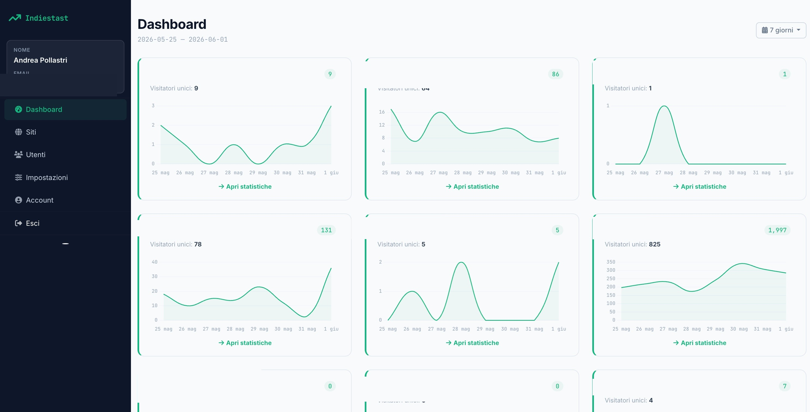
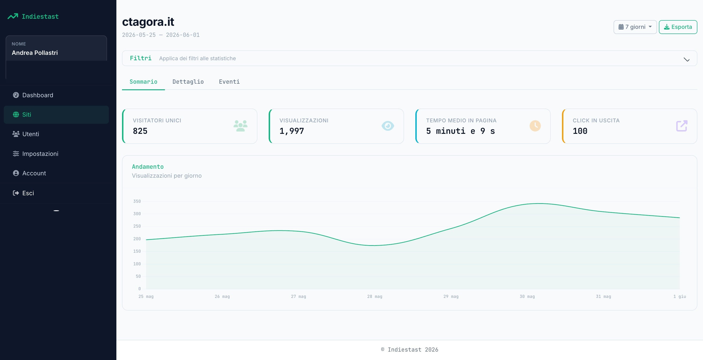
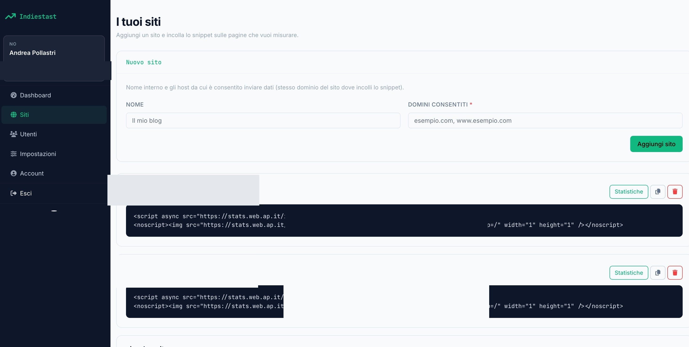

Self-hosted Laravel analytics: real-time dashboards, advanced filters, and localized exports — multiple sites, no cookies, no mandatory consent banners.
Everything you need in one place — without handing visitor data to third parties or weighing down the sites you track.
document.title, query
string, language, timezone, search terms, and bot detection.From the multi-site overview down to the snippet you paste on your pages.



One command. PHP 8.3+, Composer, and Node 20+. SQLite by default — MySQL and PostgreSQL work too.
git clone https://github.com/andreapollastri/indiestats.git cd indiestats composer run setup
The setup script installs dependencies, runs the Vite build, creates .env,
generates the app key, and runs migrations.
composer install npm install npm run build cp .env.example .env php artisan key:generate touch database/database.sqlite php artisan migrate
From zero to your first metrics in three steps.
Clone the repo, run composer run setup, then start the stack with
composer run dev.
Add a site with a name and allowed domains. Copy the async script and noscript fallback
before the closing body tag — the base URL is your APP_URL.
Multi-site overview with live visitor counts, then nine per-site tabs — all narrowed by the same filters and exportable to localized Excel.
Add SEED_FAKE_DATA=true to .env, then:
php artisan db:seed
Creates an admin user (admin@users.test / password) and, when seeding is enabled,
sample analytics.
A lightweight async snippet plus a 1×1 pixel for visitors without JavaScript.
<script async src="https://your-indiestats-url/i/xxxxxxxx-xxxx-xxxx-xxxx-xxxxxxxxxxxx.js"></script> <noscript><img src="https://your-indiestats-url/collect/pixel.gif?k=xxxxxxxx-xxxx-xxxx-xxxx-xxxxxxxxxxxx&p=/" width="1" height="1" /></noscript>
The script tracks pageviews, time on page, outbound clicks, UTM parameters, on-site search queries, page title, query string, language, timezone, and a per-tab session ID.
indiestats.track('signup');
indiestats.track('purchase', {
plan: 'pro',
price: '29.99',
currency: 'USD'
});
Up to 20 key–value properties per event. Tie events to goals in the dashboard to watch conversions.
Origin /
Referer). Always set allowed domains in production.
A multi-site overview, then dedicated tabs for every angle of traffic.
UI is localized in IT, EN, DE, FR, and ES — including DataTables, country names, and export sheets.
One filter bar. Every tab, chart, realtime count, DataTables AJAX call, and Excel export respects it.
| Filter | Description |
|---|---|
| Source | Referrer / engine |
| Search term | On-site search query |
| Page / Page title | Path and document.title |
| Query string | Full landing-page query |
| UTM (5) | source, medium, campaign, term, content |
| Event | Custom event name |
| Device / Browser / OS | From User-Agent |
| Language / Timezone | From the tracker script |
| Visitor / type | Persistent ID · human vs bot |
| Country / ASN | GeoIP and network |
Deploy without surprises. Set APP_URL to HTTPS, build assets, run the scheduler and
a queue worker.
npm run build php artisan config:cache php artisan route:cache php artisan view:cache
| Variable | Notes |
|---|---|
APP_URL |
Required. Public HTTPS URL used by the tracker snippet. |
APP_ENV / APP_DEBUG |
production / false |
QUEUE_CONNECTION |
Needed for Excel exports (default database) |
ANALYTICS_RETENTION_DAYS |
Raw data pruning window (default 375) |
GEOIP_* |
Optional MaxMind / ASN database paths and license key |
CF-Connecting-IP is used for GeoIP and ASN. For
other reverse proxies, configure Laravel trusted proxies.
One cron entry drives pruning, weekly GeoIP updates, and monthly ASN downloads.
* * * * * cd /path-to-indiestats && php artisan schedule:run >> /dev/null 2>&1
| Command | Schedule | Purpose |
|---|---|---|
analytics:prune |
Daily 02:00 | Remove raw pageviews, events, and outbound clicks past retention |
geoip:update |
Mondays 04:15 | Download GeoLite2-Country when a MaxMind key is set |
dbip-asn:update |
3rd of month 04:30 | Download DB-IP ASN Lite |
Excel exports run as background jobs. Locally, composer run dev covers the worker.
In production, keep one running:
php artisan queue:work --sleep=3 --tries=3
Use Supervisor (or equivalent) so the worker restarts automatically.
Run IndieStats on any Ubuntu VPS with cipi.sh — PHP-FPM, MariaDB, Nginx, Let's Encrypt, zero-downtime releases, and queue workers.
Explore cipi.sh →